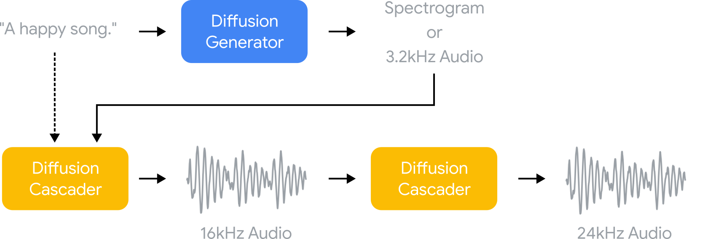
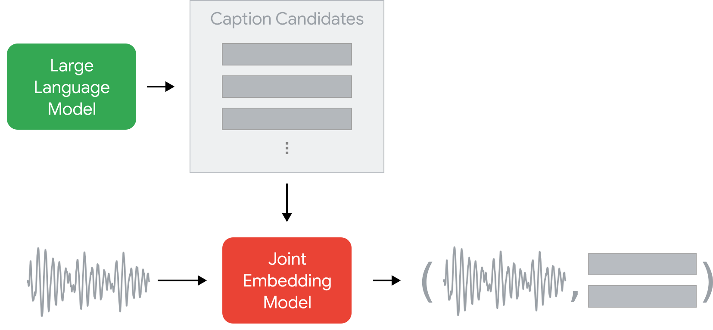

We train a series of diffusion models that are applied in succession to generate the final music clip.
Pseudo-labeling for Training Data Generation

The training set is generated by pseudo-labeling a large unlabeled set of music audio using two deep models.
A large language model is used to generate a large set of generic music descriptive sentences as caption candidates.
A pre-trained music-text joint embedding model is used to assign the captions to each music clip via zero-shot classification.
Generative Ability
Noise2Music models are able to go beyond simple music label conditioning
and handle complex, fine-grained semantics.
Generative ability grounded on semantically rich text prompts
Prompt
Waveform Model
Powerful tune with pop, rock influence with strong synthesizers for an introduction music to a sporting event.
A funk song with rhythmical guitars using wah pedals, a horn section, a strong bass line and husky vocals.
Smooth soft R&B song with tender vocals, romantic piano and groovy, funky bass.
Bright, cheerful and groovy song featuring the piano that sounds like an opening theme for a comedy series.
A female contralto singing a slow jazz ballad at a live performance.
A pop song featuring African drumming polyrhythm.
A soaring 90's pop love song with explosive female vocals hitting high notes.
Moody jazz music with a basic formation (drums, contra bass, piano and trumpet) with a melancholy trumpet solo.
Modern fusion instrumental music influenced by traditional Chinese music with a wistful tone.
Grungy, but melodic and melancholy rock music with electric guitar and vocals.
Folk song with two singers harmonizing with acoustic guitars that can be used as a commercial jingle.
Classical music with horns and trumpets that can be used as an entrance song for a ceremony.
Medium tempo hard rock music with a 70's vibe. The drum beat is heavy and technical, the bass line is steady while the guitar sound is hard and distorted. The vocalist has a strong, raspy voice.
Electronic dance music with chill vibes featuring water sounds and violin.
A male singer with a rough voice singing the climax of a power ballad to the tune of the acoustic guitar.
A fast, complicated, technical song with clear sound production value that sounds like music from a video game boss battle.
Middle eastern instrumental music for meditation, with the flute taking a lead role in the arrangement.
This is music that would be played at the climax of a movie. Dramatic, stirring orchestral music is amplifying the emotion of the scene.
A funky hip hop song played with Scottish bagpipe.
Acoustic guitars are playing heavy metal riffs.
A flute plays a salsa song.
Standard jazz song sung in acapella.
Cartoon theme song sung by cats.
More Generation Examples
More generation examples from sampled prompts of the evaluation set MusicCaps.
Prompt
Waveform Model
Spectrogram Model
A female vocalist sings this upbeat Latin pop. The song has an upbeat rhythm with a dance groove. The drumming is lively, the percussion instruments add layers and density to the music, the bass line is simple and steady, the keyboard accompaniment adds a nice melody.
The song fits the hip-hop/pop genre from the early 2000's.
This is a psychedelic rock music piece. It could also be playing in the background at a hippie coffee shop.
This audio contains acoustic drums playing a groove with a lot of cymbal hits.
The sampled drums go for a usual hip-hop beat, nothing standing out and together with the sub-woofer bass drive the pulse of the music.
The trumpets play a blaring descant, and other trumpets play a percussive harmonic layer long with a tuba playing the lower register.
It is captivating, intense, mellifluous, engaging,and fervent. This music is an enthralling Sitar instrumental.
A darbuka plays a simple beat. A variety of middle-eastern percussion instruments are played in the background.
The singer sings in a way that is calm and mellow, despite the message of the song suggesting that she is pleading for something. The song is a calm soulful R&B song, which has neo soul elements. The song has a slow jam style to it, and is emotional and romantic.
The drums feature a light accompaniment, the piano has small interventions here and there. The jazz organ plays in low volume somewhere in the background. The atmosphere is like a dim light in a bar late at night before closing hours when everybody has left home.
This is an emotional pop ballad containing a female vocal that's raspy, emotional, raw and gritty.
There's a sustained silky synth sound. The singer sounds cheerful. The song is a funky, soulful disco song.
The dance-pop music features a male voice singing a repetitive melody. The music incites the listener to dance.
There is a string orchestra playing an ominous tune that is full of suspense. This piece could be used in the soundtrack of a horror movie, especially during the scenes where a character is walking through a dangerous zone.
There is a fuzzy synth bass playing a groovy bass line with a mellow sounding keyboard playing alongside it. There is a loud electronic drum beat in the rhythmic background.
It sounds energetic and like something you would hear in clubs.
The singer has a smooth voice and a mellow style of delivery that borders on seductive and charming. The guitarist rapidly plays staccato based licks on the guitar, and the drummer plays a soulful jazzy groove. The song is a soulful, upbeat and groovy R&B song.
This is a live performance of a southern rock piece. This piece could be playing in the background at a rock bar.
The music is youthful, groovy, pulsating, electrifying, buoyant, thumping, psychedelic, trance like and trippy.
There's a crunchy and funky electric guitar being used to play chords in a funky rhythm. The song is a dance-pop song with elements of funk, disco and pop rock. The bassline is groovy and upbeat and the drumming is also centred around eighth notes and a disco groove.
This is a groovy reggae song with a good vibe for dancing. The electric guitar stabs are on the off-beats and help create a bounce to the track. The vocalist is relaxed and there is an echo effect applied to her vocal.
It's a contemporary R&B song with a slow jams vibe to it. The song is a smooth, soulful, slow love song. It feels sexy, sensual and romantic and would be suitable for an intimate night with a partner.
There is a simple tune being played on a ukulele. The atmosphere of the piece is easygoing. This piece could be used in the background of wholesome social media content.
This is an electronic/downtempo house music piece.
The song is a retro pop favourite for all ages. Male children singing this cheerful vocal harmony. The song is medium tempo with a groovy bass line, guitar accompaniment and enthusiastic drumming rhythm.
The singers sing in harmony on the chorus, where all the warm and bright instruments kick in. The song is a vibrant pop, medium tempo song with a warm tone to it. It feels like a summer song, as it has a fun and carefree vibe to it.
The song is a modern pop song with hip hop influences. A female singer sings this soulful melody with backup singers in vocal harmony. The tempo is medium, with slick drumming rhythm, groovy bass line and ethereal harmony tones.
This piece could be used in the soundtrack of a drama movie during a scene of serenity or mourning. There is no singer.
The song is slow tempo with a vocal four part harmony created by a choral section. The music is highly relaxing and pleasing.
The song is a very popular song cover and movie soundtrack. The song sounds very operatic with a slow tempo.
We believe our work has the potential to grow into a useful tool for artists and content creators that can further enrich their creative pursuits. To live up to this promise, more work is needed with musicians and other stakeholders to develop models into a meaningful co-creation tool.
We acknowledge the limitations of the proposed model. In particular, large generative models learn to imitate patterns and biases inherent in the training sets, and in our case, the model can propagate the potential biases built in the text and music corpora used to train our models. Such biases can be hard to detect as they manifest in often subtle, unpredictable ways, which are not fully captured by our current evaluation benchmarks. Demeaning or other harmful language may be generated in model outputs, due to learned associations or by chance.
Beyond this, we recognize that musical genres are complex and key musical attributes are contextual and change over time. Training data reflect a limited corpus of musical samples and genres, given uneven recording and digitization of samples from global musical cultures. How music is categorized and labeled can essentialize genres; and these labels may be constructed and applied without the participation of communities. We caution readers not to presume each sample can generalize to an entire musical genre or one label can capture the diversity of musical genres produced within a region (i.e. “Latin music” contains a broad range of cultures and styles). Moreover, musical samples may sound "authentic" to those outside these communities, as nuances in musical traditions need trained ears/cultural knowledge to recognize. In generating vocals, there may be possible caricatures, “mock accents,” parodies, or other demeaning linguistic harms (e.g., "mock Black singing" in a request for "soulful vocals'' or "mock Spanish" in a Latin music request) that arise in text prompts requesting cultural or religious musical genres, or genres that emerged as part of the political struggles of certain communities (e.g., Black American music, Nueva canción, Chicano folk, Brazilian Tropicalismo, Sufi Qaw).
As is with any other technology, the result of our research can be misused or abused. We acknowledge the risk of potential misappropriation when the created content exactly matches examples in training data. Duplication checks are a built-in part of our current pipeline of producing and releasing examples, and will continue to be for any future work.
Efforts for identifying potential safety issues and addressing them are important components for improving these generative models. Until there is a more clear understanding of the limitations and risks, we do not intend to release the model.
Authors
Qingqing Huang*,
Daniel S. Park*,
Tao Wang†,
Timo I. Denk†,
Andy Ly†,
Nanxin Chen†,
Zhengdong Zhang,
Zhishuai Zhang,
Jiahui Yu,
Christian Frank,
Jesse Engel,
Quoc V. Le,
William Chan,
Wei Han†.
†Core contributor,
*Equal contribution.
Acknowledgements
We are grateful to Aren Jansen for building MuLan, which is an indispensable component of this project.
We give thanks to Austin Tarango, Fernando Diaz, Kathy Meier-Hellstern, Molly FitzMorris, and Renee Shelby for helping us incorporate important responsible AI practices around this project.
We acknowledge support from Blake Cunningham, Cara Adams, for giving us advice along the project and assisting us with the publication process.
We appreciate valuable feedback and support from Alex Ku, Andrea Agostinelli, Ankur Bapna, Chen Liang, Ed Chi, Ekin Dogus Cubuk, Erica Moreira, Esteban Real, Heiga Zen, Jaehoon Lee, James Qin, Nathan Park, Stephen Kelly, Thang Luoung, Weizhe Hua, Ye Jia, Yifeng Lu, Yonghui Wu, Yu Zhang, Yuma Koizumi.
Special thanks to authors of MusicLM for helpful discussions and cooperation, and especially for sharing their evaluation set and manuscript before publication.